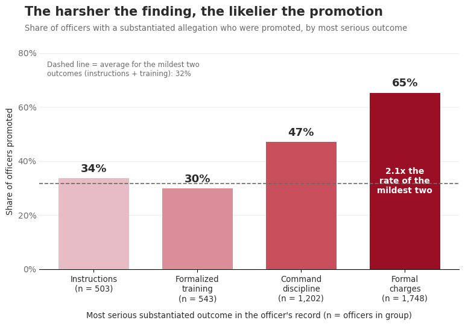
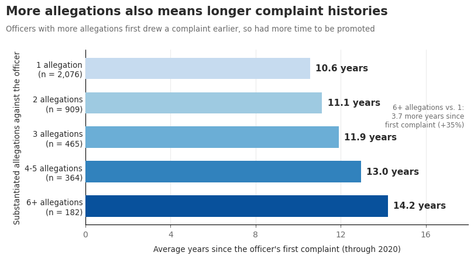

Proposition: At the NYPD, serious misconduct findings don't hurt an officer's career: the harsher the substantiated finding, the more likely the officer was promoted.
FOR the Proposition

Design Decisions and Rationale:
- Grouping officers by their most serious outcome (score: -0.5) \n Each officer is placed by the harshest finding on their record, so someone with five “instructions” findings and one “charges” finding counts only as “charges.” This turns the question from how often an officer was disciplined into how badly, which makes the link to promotion sound more troubling. It's a defensible way to summarize a record, but we picked it because it gave the clearest climb. We considered summing severity points, but a single “worst outcome” was easier to explain on the chart.
- Dashed baseline averaging the two mildest groups (score: -1) \n Combining instructions (34%) and training (30%) into one 32% line creates a low reference point that makes the charges bar look like a huge jump. It also hides that the trend isn't steady, and that training is actually lower than instructions. We explain what the line means in the top left, which keeps it from being a flat out trick, but we merged those two groups to sharpen the contrast.
- “2.1x the rate” label inside the charges bar (score: -0.5) \n A ratio reads as more dramatic than the 33-point difference, and placing it in white text inside the darkest bar makes it the first thing readers see. The number is accurate (65% ÷ 32% ≈ 2.06), but it compares against our own constructed baseline rather than any single real group. Against instructions alone, it would only be 1.9x.
- Sample sizes and a “how to read” note (score: +2) \n Each bar shows its n, and the footnote walks through one calculation (1,139 of 1,748 = 65%). Here the largest group is also the most damning one, so showing the sizes actually strengthens the argument: 65% is the most reliable number on the chart. This is a deliberate change from our first chart, where hiding n covered up a small group.
AGAINST the Proposition

Design Decisions and Rationale:
- Using years since first complaint as a stand-in for time on the force (score: -0.5) \n The dataset has no hire date, so we used 2020 minus the year of the officer's first complaint. It is a weak proxy, because an officer who joined years earlier but got a first complaint late shows a shorter career than they have. It is also partly built in: an officer needs time to accumulate several allegations, so the bars are expected to rise. We labeled the axis “years since the officer's first complaint” and said in the footnote that it isn't a hire date. Even so, the chart could suggest more independence between complaints and tenure than the data supports.
- Reusing the same allegation groups as Visualization 1 (score: +1) \n Using the same x-axis (1, 2, 3, 4-5, 6+) lets a reader line up the two charts and see that the groups with higher promotion rates are also the groups with longer histories. It works as a direct rebuttal to the first chart, and it is transparent about it. The cost is that it inherits the allegation-based groups and uneven bins we criticized earlier, and counting allegations instead of complaints makes the high groups look more extreme.
- A subtitle that links complaint history to promotion (score: -1) \n The title says officers with more allegations have longer complaint histories, which the chart shows. The subtitle adds that they therefore “had more time to be promoted,” which the chart doesn't show, since it has no promotion data. The causal chain (more time, more complaints, more promotion) is asserted, not demonstrated, and it leans on the reader accepting Visualization 3 as the support. We kept the claim because it is plausible and explains why the chart is on the “false” side, but it is the least supported sentence on the page.
Final Reflection
The mechanical part was straightforward. Once the officer table existed, each chart took only a few lines of code. The hard part was deciding what the data could actually support. Our first chart was the easiest to make persuasive, and its strongest effects were invisible on the page. We counted a move to Detective as a promotion, used allegations instead of complaints, and ignored time on the force. The honest version was harder because once we accounted for the era, the result was weaker than the headline we wanted. What surprised us most was that data transformations moved the story far more than visual tricks. A truncated axis is easy to spot, but swapping complaints for allegations changed the within era gap from two points to nine while the chart looked completely normal. Since every officer in our dataset had at least one complaint and pre 2020 departures were missing, we were only ever comparing officers with some complaints to those with more. We define ethical visualization as being honest about what the data can and cannot show, even when trying to persuade. The line we draw is whether a thoughtful reader who learned how the chart was made would feel misled. Framing and choosing which comparison to show are acceptable when the numbers are accurate and the title does not claim too much. Choices become misleading when they hide something that would change the reader's conclusion, like group sizes, a key confounder, or a definition that shifts the result by twenty points. Almost any choice can be defended on its own, so what separates honest framing from manipulation is whether we picked a method because it was accurate or because it gave us the result we wanted. These are real officers and real complaints, which is all the more reason not to stretch the claims.